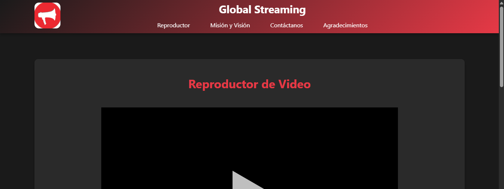
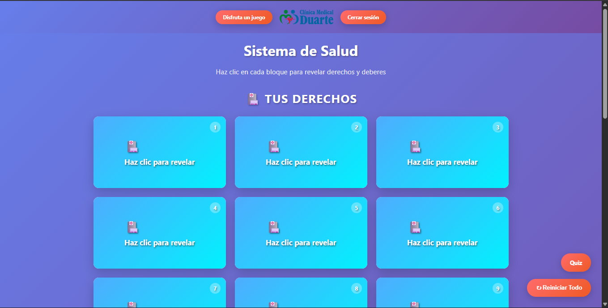
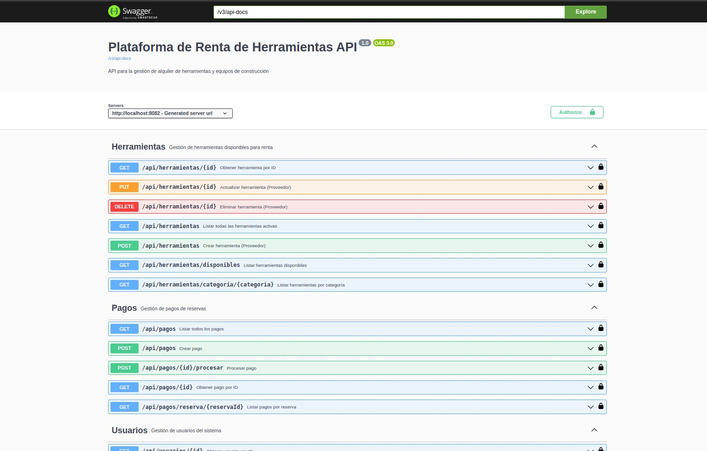
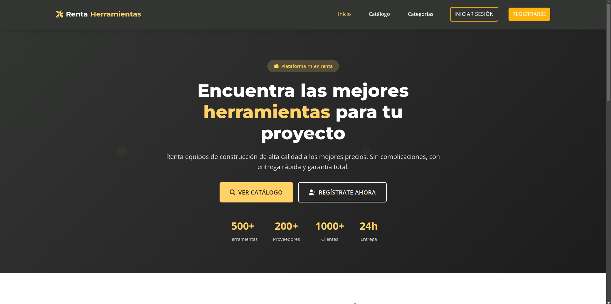

Desarrollo y mantengo aplicaciones web, trabajo con bases de datos y busco soluciones prácticas a problemas reales. Experiencia con sistemas empresariales, PHP, SQL, JavaScript y Git.
Soy desarrollador de software con formación técnica y experiencia práctica en el mantenimiento y evolución de aplicaciones web en un entorno empresarial del sector salud. He trabajado con código PHP existente, consultas SQL, integración de componentes web, diagnóstico de incidencias y control de versiones con Git. También he desarrollado proyectos académicos y personales con Java, Spring Boot, JavaScript y bases de datos. Me interesa especialmente el desarrollo backend y la creación de soluciones mantenibles que respondan a necesidades reales.
Mantenimiento y modificación de aplicaciones web existentes.
Consultas, manipulación de datos y trabajo con estructuras de bases de datos.
Programación orientada a objetos y desarrollo de aplicaciones.
Desarrollo backend en proyectos académicos y personales.
Interactividad web, eventos, DOM e integración con componentes existentes.
Control de versiones, ramas y colaboración en flujos de desarrollo.
Lógica de programación, scripts y manejo de archivos.
Estructura semántica, estilos y diseño responsive.

Plataforma de streaming con interfaz moderna y funcional. Incluye catálogo de contenido, reproductor y sistema de navegación intuitivo.

Plataforma educativa e interactiva diseñada para niños en centros de salud. Incluye juegos, actividades y contenido adaptado para el aprendizaje.

Aplicación backend para gestionar usuarios y operaciones de alquiler, desarrollada como proyecto de software con enfoque en lógica de negocio y persistencia de datos.

Aplicación Frontend para gestionar usuarios y operaciones de alquiler, desarrollada como proyecto de software con enfoque en lógica de negocio y persistencia de datos.
Clínica Duarte · Sistema DUSOFT
Trabajo sobre una aplicación empresarial del sector salud: mantenimiento y modificación de módulos PHP, consultas y scripts SQL, integración de componentes con JavaScript y AJAX/Xajax, diagnóstico de incidencias, uso de Git y validación de cambios. Participación en funcionalidades relacionadas con procesos asistenciales, inventarios y gestión de traslados.
Campuslands · Cúcuta
Formación en Python, Java, Spring Boot, JavaScript, HTML/CSS, SQL, PostgreSQL, Git y metodologías ágiles (SCRUM).
INEM José Eusebio Caro · Cúcuta
Formación media técnica en Recursos Humanos.